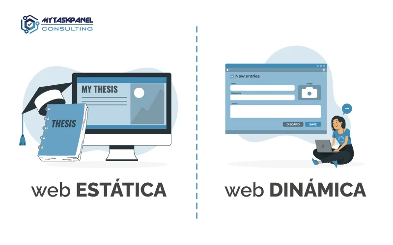

Tipos de Proyectos Web que puedes desarrollar con PHP
- Sitios web estáticos y dinámicos: PHP se puede utilizar para crear tanto sitios web estáticos como dinámicos. Los sitios estáticos pueden utilizar PHP para incluir fragmentos de código en páginas HTML, mientras que los sitios dinámicos generan contenido de manera personalizada para cada usuario en función de sus acciones o preferencias
- •Sistemas de gestión de contenido (CMS): PHP es la base de muchos sistemas de gestión de contenido populares, como WordPress,Joomla y Drupal. Estos CMS permiten a los usuarios crear y administrar sitios web fácilmente, agregar contenido y personalizar la apariencia.
- Sistemas de Gestión de Contenidos (CMS): PHP es el motor detrás de muchos CMS populares, como WordPress o Joomla. Estos sistemas permiten a los usuarios administrar fácilmente el contenido de su sitio web sin necesidad de saber programar.
- Tiendas en línea y comercio electrónico: Las plataformas de comercio electrónico, comoWooCommerce (basado en WordPress), Magento y PrestaShop, a menudo utilizan PHP para gestionar catálogos de productos, carritos de compra y procesamiento de pagos en línea.
- E-Commerce: Plataformas de blogs populares como WordPress y Blogger están basadas en PHP.Estos sistemas permiten a los usuarios publicar contenido, gestionar comentarios y personalizar el diseño de sus blogs.
- Aplicaciones web personalizadas: Los desarrolladores utilizan PHP para crear una amplia gama de aplicaciones web personalizadas, desde sistemas de reservas y gestión de proyectos hasta aplicaciones de seguimiento de inventario y más.
